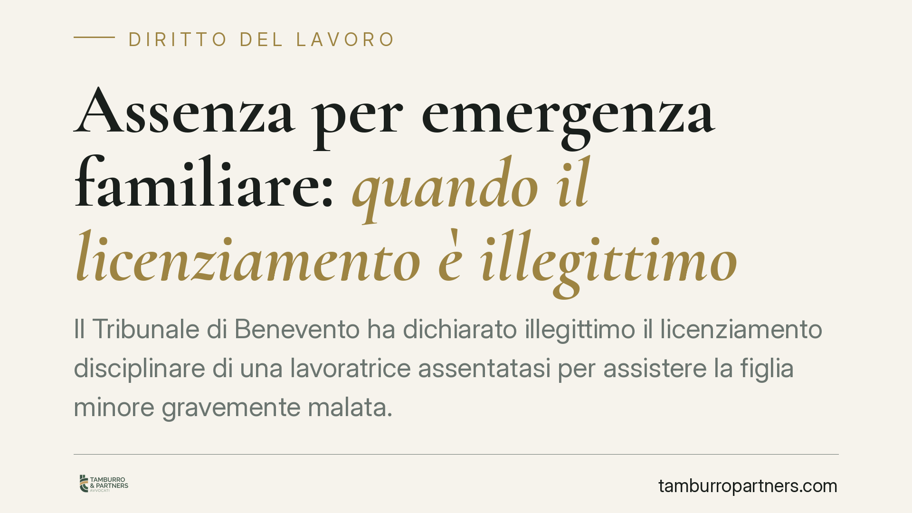

Assenza per emergenza familiare: quando il licenziamento è illegittimo
Il Tribunale di Benevento ha dichiarato illegittimo il licenziamento disciplinare di una lavoratrice assentatasi per assistere la figlia minore gravemente malata. Secondo i giudici, lo stato di necessità esclude la rimproverabilità soggettiva della condotta, pur in presenza di una giustificazione tardiva. Disposta la reintegra con indennità risarcitoria. La pronuncia riporta l'attenzione sul confine tra fatto materiale e colpevolezza nel diritto disciplinare.

Il caso
Una lavoratrice si assenta dal lavoro per prestare assistenza alla figlia minore, colpita da una patologia grave e improvvisa. Non comunica tempestivamente il motivo dell'assenza. Il datore di lavoro contesta l'inadempimento e procede al licenziamento disciplinare.
Il Tribunale di Benevento, sezione lavoro, ha dichiarato illegittimo il recesso (gli estremi della sentenza — numero e data di deposito — sono da verificare sulle banche dati ufficiali al momento della pubblicazione). Il ragionamento dei giudici non nega che l'assenza vi sia stata, né che la comunicazione sia stata tardiva: nega che quella condotta fosse disciplinarmente rimproverabile.
Inquadramento normativo
Il cuore della decisione è la distinzione tra fatto materiale e rimproverabilità soggettiva. L'assenza, in sé, è un fatto accertato. Ma la sanzione disciplinare presuppone un elemento ulteriore: che la condotta sia imputabile al lavoratore a titolo di colpa o dolo.
Il riferimento più pertinente è l'art. 2106 c.c., che impone la proporzionalità tra infrazione e sanzione. La giurisprudenza ha progressivamente valorizzato, accanto al dato oggettivo, la valutazione della scusabilità della condotta: lo stato di necessità — l'urgenza di tutelare la salute di un figlio — incide sull'elemento soggettivo e può escludere quella rimproverabilità che fonda il licenziamento per giusta causa (art. 2119 c.c.).
Va tenuta distinta la giustificazione (la prova del motivo oggettivo dell'assenza) dalla scusabilità (il perché la mancata o tardiva comunicazione non è imputabile a negligenza). L'onere di allegare e provare entrambe grava sul lavoratore.
Quanto alla tutela, occorre distinguere il regime applicabile. Per i rapporti ricadenti nell'art. 18 dello Statuto dei lavoratori (L. 300/1970, come modificato dalla L. 92/2012), l'insussistenza del fatto o la sua non punibilità disciplinare conducono alla cosiddetta tutela reintegratoria attenuata (art. 18, comma 4): reintegra nel posto di lavoro più un'indennità risarcitoria fino a un massimo di dodici mensilità. Per gli assunti dal 7 marzo 2015 opera invece il regime delle tutele crescenti (D.Lgs. 23/2015), con presupposti e limiti risarcitori propri. L'individuazione del regime dipende dalla data di assunzione e dai requisiti dimensionali del datore.
Implicazioni pratiche
Per il lavoratore, la pronuncia conferma che un'emergenza familiare seria può neutralizzare la rilevanza disciplinare di un'assenza, anche se la comunicazione non è stata immediata. Non si tratta però di un salvacondotto automatico: serve dimostrare l'urgenza, la gravità della situazione e l'impossibilità concreta di avvisare tempestivamente.
Per il datore di lavoro, il messaggio è che la contestazione non può fermarsi al dato oggettivo dell'assenza. Prima di sanzionare occorre valutare il contesto, raccogliere la versione del dipendente e verificare la proporzionalità della misura. Un licenziamento adottato ignorando lo stato di necessità è esposto all'annullamento, con i costi della reintegra e dell'indennità.
Un chiarimento utile riguarda i permessi ex L. 104/1992: non coprono ogni urgenza sanitaria, ma l'assistenza a familiari con handicap in situazione di gravità, riconosciuta nelle forme di legge. Non vanno confusi con le assenze per emergenze improvvise prive di tale presupposto.
Cosa fare in concreto
- Documenta l'urgenza: conserva certificati medici, referti, accessi al pronto soccorso e ogni prova della gravità della situazione familiare.
- Comunica il prima possibile: anche se non puoi avvisare prima dell'assenza, trasmetti la giustificazione appena le circostanze lo consentono, preferibilmente per iscritto.
- Rispondi alla contestazione disciplinare: presenta le tue difese nel termine indicato dalla lettera (di norma cinque giorni), allegando la documentazione a sostegno della scusabilità.
- Impugna nei termini: il licenziamento va contestato per iscritto entro 60 giorni dalla comunicazione, seguiti dal deposito del ricorso o dalla comunicazione di tentativo di conciliazione entro i successivi 180 giorni.
- Verifica il regime applicabile: è opportuno far valutare da un legale quale tutela (art. 18 o tutele crescenti) si applichi al rapporto, per stimare correttamente l'esito del contenzioso.
Disclaimer
Contributo informativo a cura di Tamburro & Partners - Avv. Giuseppe Tamburro. Non costituisce parere legale.
Ogni storia di lavoro ha i suoi tempi.
Se gestisci HR e vuoi un confronto su contenzioso, ispezioni o licenziamenti, scrivi allo studio. Ti rispondiamo entro un giorno lavorativo.